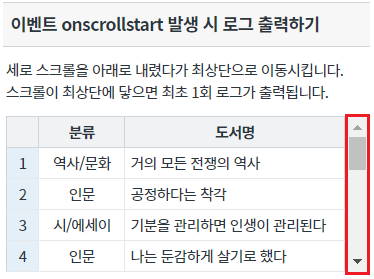
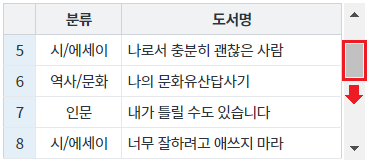
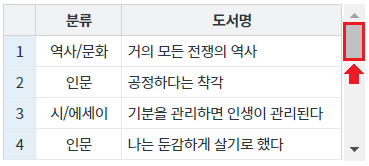
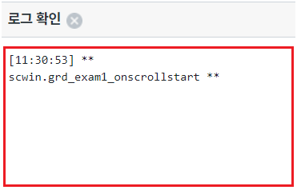
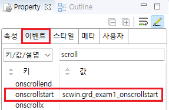
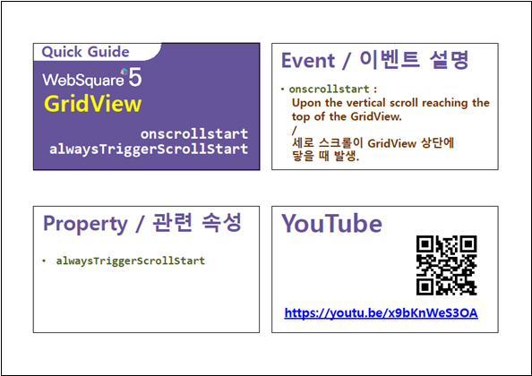

GridView의 이벤트 onScrollStart 예제입니다. GridView의 세로 스크롤이 이동하여 최상단에 닿을 때 최초 1회 발생합니다.
속성 alwaysTriggerScrollStart을 'true'로 지정하면 스크롤이 최상단에 위치할 때 마다 onscrollstart이벤트가 발생합니다.
이벤트 onscrollstart 발생 시 로그 출력하기
영역 [이벤트 onscrollstart 발생 시 로그 출력하기]의 GridView를 확인합니다.
GridView에 세로 스크롤이 있습니다.
[브라우저(Chrome) 실행 예시]

[브라우저(Chrome) 실행 예시 - 스크롤이 아래로 이동된 상태]

[브라우저(Chrome) 실행 예시 - 스크롤이 최상단으로 이동된 상태]

세로 스크롤을 최상단 닿으면 onscrollstart 이벤트가 최초 1회 발생되고 이벤트 핸들러가 실행되어 로그가 출력됩니다.
[브라우저(Chrome) 실행 예시 - 로그 확인]
영역 [로그 확인] 또는 브라우저의 개발자 도구의 콘솔(console)탭에 출력된 로그를 확인합니다.

[로그 예시]
[11:30:53] ** scwin.grd_exam1_onscrollstart **
예제 파일에서는 핸들러로 사용할 함수명을 scwin.grd_exam1_onscrollstart로 정의하였습니다.
그림 1.웹스퀘어5 SP5 스튜디오의 Property View(속성창)의 이벤트 탭 예시

[소스 코드 예시]
<!-- gridView 의 소스 본문 예시 --> <w2:gridView ev:onscrollstart="scwin.grd_exam1_onscrollstart" id="grd_exam1"> <!-- 중략 --> </w2:gridView>
STEP3. 핸들러 함수 scwin.grd_exam1_onscrollstart를 정의합니다.
[소스 코드 예시]
/** * GridView grd_exam1의 onscrollstart 이벤트 핸들러 */ scwin.grd_exam1_onscrollstart = function () { //console에 log 출력 console.log("scwin.grd_exam1_onscrollstart"); };
onscrollstart
alwaysTriggerScrollStart
onscrollend
[웹스퀘어5 SP5 개발 가이드] GridView
링크 : https://docs1.inswave.com/sp5_user_guide/bc10c1b82c9a2a0b#e1c4658baf7e726f
[웹스퀘어5 SP5 개발 가이드] GridView onscrollstart
링크 : https://docs1.inswave.com/sp5_user_guide/86bdcf48029b958b#e1a60f3ca27d3d97
GridView onscrollstart
링크 : https://youtu.be/x9bKnWeS3OA
